Álgebra Linear Computacional
Aula 12: Análise de Componentes Principais
ramosh@dcc.ufmg.br
Créditos
Important
Os slides desse curso são fortemente baseados no curso do Fabrício Murai e do Erickson Nascimento
Objetivos de aprendizagem
- Entender o que é o PCA e como ele é usado na análise de dados
- Entender por que a dimensionalidade dos dados pode ser reduzida com pouca perda em certos casos (e.g., quando há - correlação entre vars)
- Conhecer e saber executar passos de pré-processamento necessários ao PCA
- Saber calcular projeções ortogonais em hiperplanos
- Saber utilizar o teorema da decomposição ortogonal
- Entender significado das componentes principais e saber utilizá-las pra recuperar dado original
- Entender como o gráfico da variância explicada pode ser usado para definir o número de PCs
Referências adicionais
- StatQuest on YouTube
PCA
Técnica de análise de dados para redução de dimensionalidade
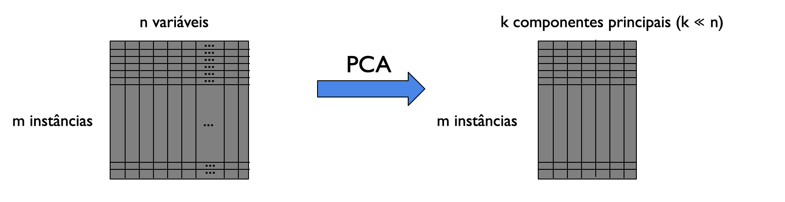redução de dimensionalidade
PCA transforma um conjunto de variáveis possivelmente correlacionadas em um conjunto menor de variáveis chamadas componentes principais
Para que PCA é usado?
Visualização: normalmente é o primeiro passo ao analisar datasets de alta dimensionalidade
Acelerar treinamento de modelos de aprendizado de máquina
PCA: visão geral
- Transforma o espaço vetorial dos dados para reduzir a dimensionalidade de grandes conjuntos de dados.
- Usando uma projeção, dados originais (muitas variáveis) podem ser interpretados facilmente (poucas variáveis)
- E.g.: encontrar tendências, padrões e outliers
Exemplo: automóveis
- Dataset \(\{x^{(i)}: i=1,\ldots,m\}\) de atributos de \(m\) tipos de automóveis
- Atributos: velocidade máxima, raio de giro, etc.
- Seja \(x^{(i)} \in \mathbb R^n\), i.e., \(n\) atributos
- Suponha que entre atributos, temos vel. max. em km/h e mph
- Estes atributos são quase linearmente dependentes (erros de arredondamento).
- Ou seja: dados estão aproximadamente em espaço de n-1 dimensões!
Exemplo: pilotos de helicóptero de controle remoto
- \(x_1^{(i)}\) é uma medida da habilidade do piloto \(i\)
- \(x_2^{(i)}\) é uma medida de quanto ele gosta de voar
- Suponha que apenas pilotos que treinam bastante, aqueles que realmente gostam de voar, se tornam bons pilotos
- Logo, \(x_1\) e \(x_2\) estão fortemente correlacionados.
- Podemos conjecturar que os dados estão em um eixo “diagonal”, com apenas um pouco de ruído saindo do eixo. 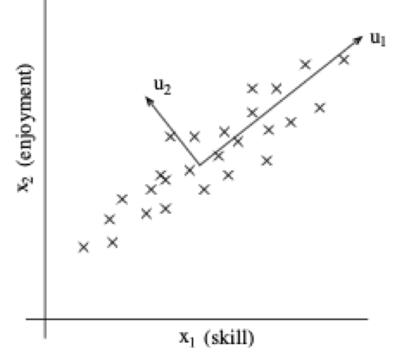
Important
Como determinar a direção de \(u_1\)?
Exemplos
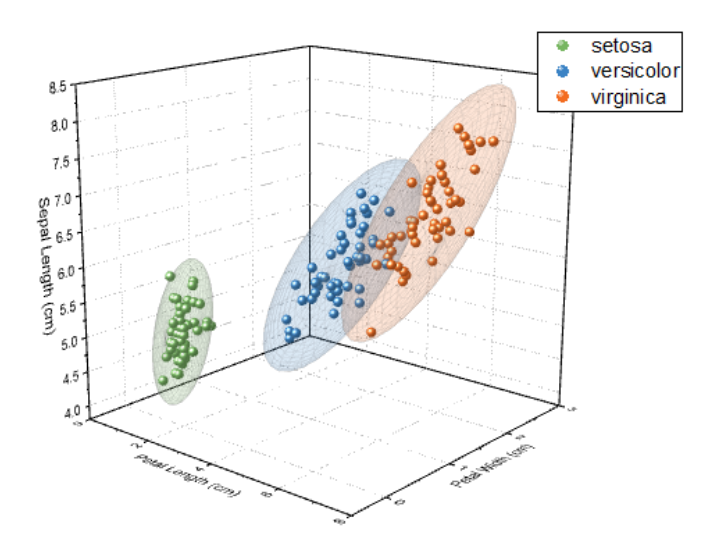Exemplos
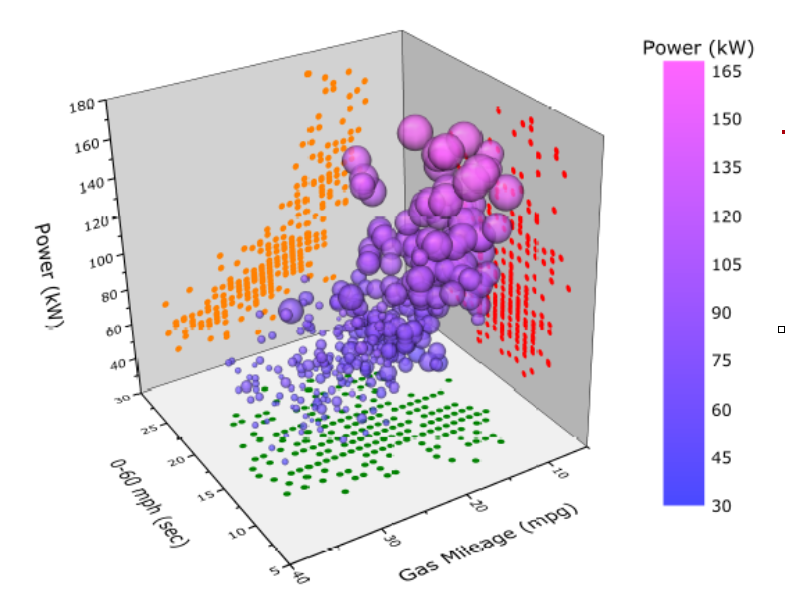Note
Nuvem de pontos
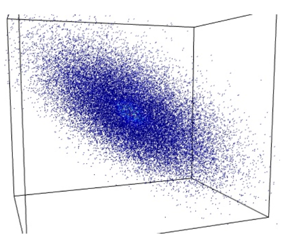Projetando em eixos
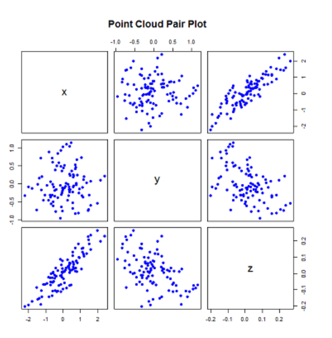Rodando os eixos com cuidado
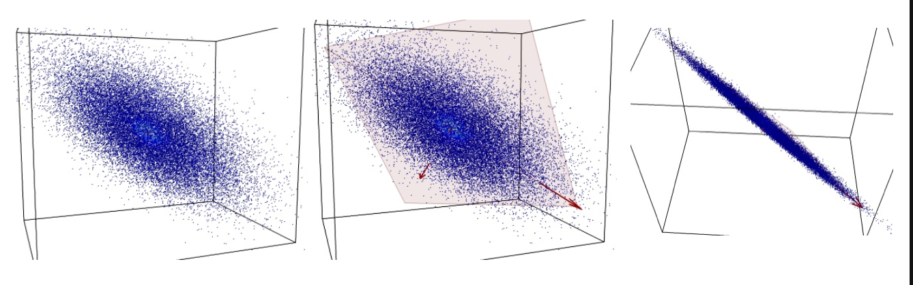Note
Ideia
- Pontos \((x,y,z) \in \mathbb R^3\)
- Entretanto, eles parecem viver num espaço de dimensão menor, num plano bi-dimensional
- O plano não está alinhado com os eixos coordenados
- Num novo sistema de coordenadas, podemos usar apenas DUAS coordenadas para representar os pontos (de forma aproximada)
De 3D para 2D
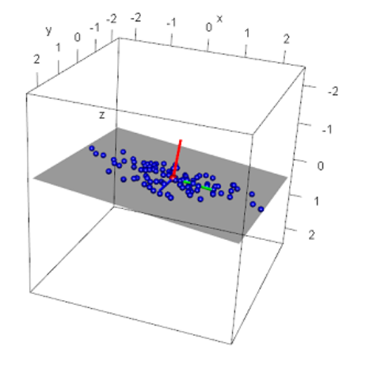
- Veja o novo sistema de coordenadas no gráfico
- Ele está “torto”com respeito ao sistema cartesiano da figura
- Neste NOVO sistema, podemos representar cada ponto de forma aproximada:
- Podemos usar as duas coordenadas dos eixos verde e azul e ignorar a coordenada do eixo vermelho
Note
- Nem sempre será possível obter uma boa aproximação.
- Será preciso checar quando isto será possível.
- Já veremos como fazer isto…
Como fazer a redução?
- Não sabemos de antemão se é possível reduzir a dimensão da informação no vetor \(x\) sem perder qualidade da representação.
- Se for possível, também não sabemos de antemão de quanto podemos reduzir a dimensão inicial:
- Podemos reduzir em 3, 5, 10, 40, 120 dimensões??
- Como responder a isto de forma automática, sem gastar um segundo de nosso cérebro?
- E mais, de forma ótima: nem gastando muito seu cérebro você vai conseguir algo melhor
Centrando os pontos
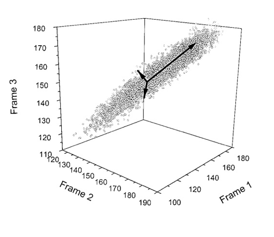
\[ \begin{bmatrix} x_1\\ x_2\\ x_3 \end{bmatrix} = \begin{bmatrix} \mu_1\\ \mu_2\\ \mu_3 \end{bmatrix} + \left[ \begin{bmatrix} x_1\\ x_2\\ x_3 \end{bmatrix}- \begin{bmatrix} \mu_1\\ \mu_2\\ \mu_3 \end{bmatrix} \right] \]
\[ x = \mu + [x-\mu] = x+y\]
Subtraindo a média de cada coordenada-variável, temos um novo vetor \(y\) com média zero em cada coordenada.
A nuvem de pontos é deslocada rigidamente para a origem
Pré-processamento
Primeiro z-normalizamos os dados:
- Seja \(\mu = \frac{1}{m}\sum_{i=1}^m x^{(i)}\)
- Substituta cada \(x^{(i)}\) por \(x^{(i)} - \mu\)
- Seja \(\sigma^2 = \frac{1}{m-1}\sum_i \left( x_j^{(i)} \right)^2\)
- Substitua cada \(x_j^{(i)}\) por \(\frac{x_j^{(i)}}{\sigma_j}\)
Note
Os passos 3-4 garantem que atributos sejam tratados igualmente
Como calcular o eixo maior?
Problema: encontrar vetor unitário \(u\) que maximiza a variância dos dados projetados em \(u\).
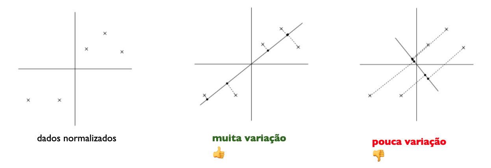 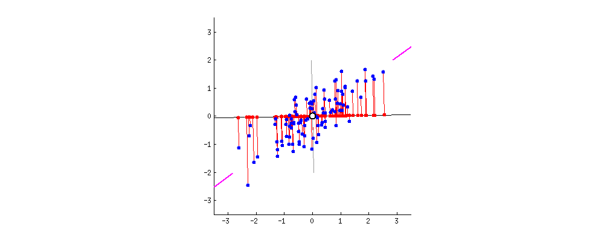
Projeção ortogonal
- Seja \(W\) um subespaço do \(\mathbb R^n\) e \(x\) um vetor em \(\mathbb R^n\)
- Queremos descobrir o vetor \(x_W\) mais próximo a \(x\) em \(W\)
- O vetor \(x_W\) é chamado projeção ortogonal de \(x\) em \(W\)
Decomposição ortogonal
Dizer que o vetor \(x_W\) é o vetor mais próximo a \(x\) em \(W\) equivale a dizer que a diferença \(x - x_W\) é ortogonal a \(W\)
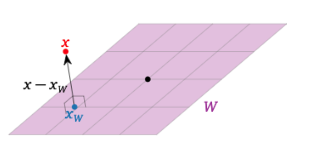Se \(x_{W\perp} = x - x_W\), então \(x = x_W + x_{W^\perp}\), onde \(x_W\) está em \(W\) e \(x_{W^\perp}\) está em \(W^\perp\)
Decomposição ortogonal
Teorema. Seja \(W\) um subespaço do \(\mathbb R^n\) e \(x\) um vetor em \(\mathbb R^n\). Então podemos escrever \(x\) de forma única como \[x = x_W + x_{W^\perp}\]
Onde \(x_W\) é o vetor mais próximo a \(x\) em \(W\) e \(x_{W\perp}\) está em \(W^\perp\)
Definição. A Equação anterior é chamada decomposição ortogonal de \(x\) com relação à \(W\); vetor \(x_W\) é a projeção ortogonal de \(x\) em \(W\).
Projeção em plano ou hiperplano
Seja \(W\) o espaço gerado por \(\{v_1,\ldots,v_m\}\) e \(A\) a matriz cujas colunas são \(\{v_1,\ldots,v_m\}\). Para calcular a decomposição ortogonal de \(x\) em relação a \(W\):
- Calcule a matriz \(A^\top A\) e o vetor \(b=A^\top x\)
- Resolva \(A^\top Ac = b\) e encontre o vetor desconhecido \(c\).
- O sistema é sempre consistente, escolha uma solução \(c\):
\(x_W = Ac\) e \(x_{W\perp} = x-x_W\)
- \(x_W = \underbrace{A(A^\top A)^{-1}A^T}_{c} x\)
intuição
Se \(x\) estivesse em \(W\) teríamos \(Ac = x\). Como \(x\) não está em \(W\) não existe \(c\) que satisfaça à relação anterior. Então, buscamos por \(x_W = \text{arg}\min_{AC} \Vert Ac - x\Vert_2^2\). Dessa maneira, tomaremos \(A^\top Ac = A^\top x\). Esse último sistema sempre terá solução.
O produto de \(A^\top x_{W\perp} = 0\). Para isso, temos que \(A^\top (x - x_W) = A^\top x - (A^\top A(A^\top A)^{-1}A^\top x) = A^\top x - A^\top x = 0\), como queríamos mostrar.
Mudança de base canônica para base \(B\)
Seja \(B=\{v_1,\ldots,v_n\}\) uma base de \(\mathbb R^n\). As coordenadas do vetor \(x\) em relação à \(B\), \(a = [a1,\ldots,an]^\top = [x]_B\) são obtidas a partir de \[a_1v_1 + a_2v_2 + \ldots + a_nv_n\] ou seja \[[v_1 v_2 \ldots v_n][x]_B = [x]\]
Seja \(V\) a matriz cujas colunas são os vetores da base \[ V = [v_1 v_2 \ldots v_n]\]
Então para qualquer vetor \(x\) temos \[ V[x]_B = x\] e \[[x]_B = V^{-1}x\]
Note
O que acontece se \(V_{n\times n}\) for ortonormal? (\(V^{-1} = V^\top\))
Exemplo de análise de dados multivariada
DEFRA (Department for Environment, Food and Rural Affairs) data: consumo (g/pessoa/semana), 17 tipos de comida, quatro países Reino Unido em 1997.
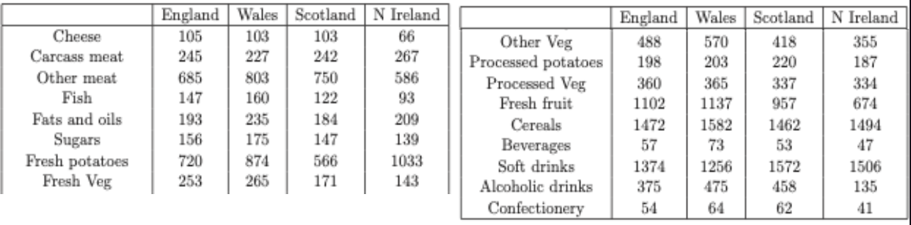Como analisar estes dados? Existem correlações entre os países? Plotar todos de uma vez? Plotar variáveis 2 a 2?
PCA e a primeira componente principal (PC1)
O objetivo do PCA é identificar novo conjunto de eixos ortogonais de coord. a partir dos dados.
No primeiro passo, PCA encontra a primeira componente principal (PC1), direção que maximiza variância através das coords.
Após encontrar PC1, projetamos os dados neste novo eixo. Como? 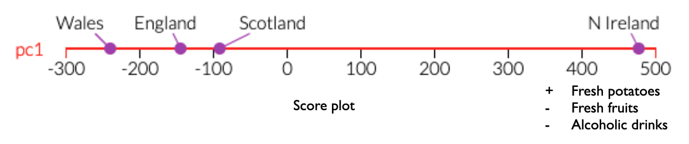
PCA e a segunda componente principal (PC1)
- PC2 é ortogonal a PC1
- Direção de maior variância dos dados, dentre direções ortogonais a PC1
- De novo, projetar coordenadas em PC2 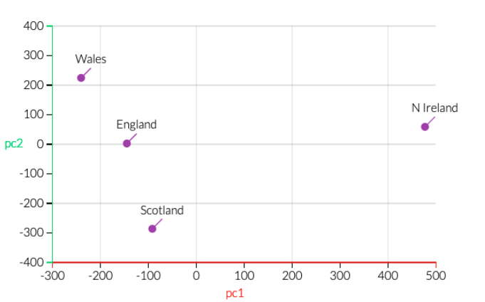
PCA vs variância explicada
- PCA também retorna info sobre contribuição de cada PC para a variância total dos dados: 67% por PC1, 97% por PC1+PC2
PCA: composição de cada PC
Também obtemos influência de cada variável original nos PCs
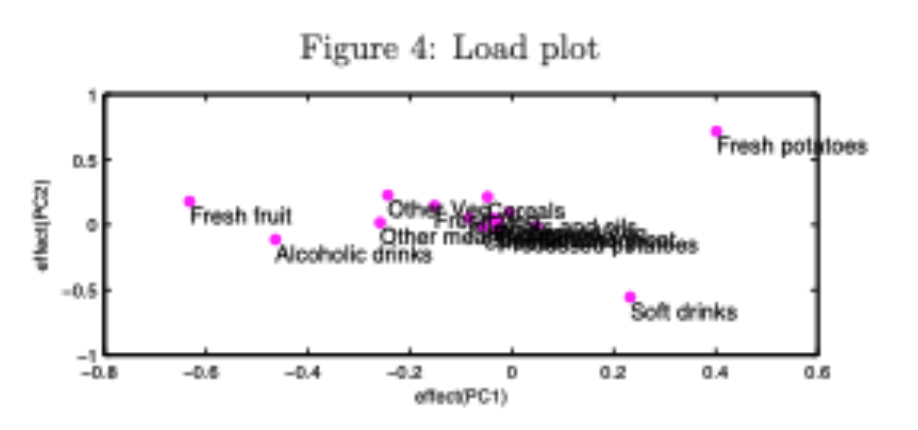